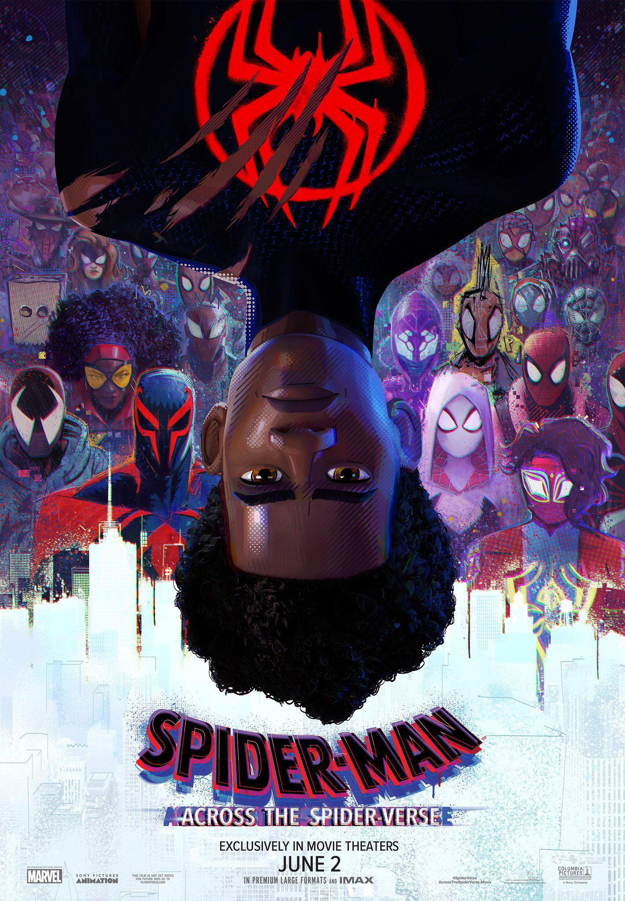

HOME
ABOUT
ACTION
SCIFI
NON-FICTION
CONTACT
ABOUT
ACTION
SCIFI
NON-FICTION
CONTACT
Sci-Fi Movie Reviews
Click on movie poster image to see full review.
Movie Meter
80%
See other professional reviews
Movie Meter
90%
See other professional reviews
Movie Meter
85%
See other professional reviews
Movie Meter
85%
See other professional reviews

![Star Wars: Revenge of the Sith is a triumphant conclusion to the prequel trilogy. George Lucas delivers a visually stunning and emotionally charged experience, blending political intrigue, personal tragedy, and the classic battle between good and evil. Ewan McGregor's Obi-Wan and Hayden Christensen's Anakin bring depth to the narrative, while spectacular special effects and John Williams' iconic score elevate the film. Successfully bridging trilogies, it explores Anakin's tragic transformation into Darth Vader and the rise of the Galactic Empire. Balancing nostalgia and innovation, the film satisfies both dedicated fans and newcomers. In summary, Revenge of the Sith is a must-watch for its unforgettable journey through the epic world of Star Wars. May the Force be with you on this brief yet emotional galactic adventure.](./W3.CSS_Template_files/rotspic.jpg)
![Blade Runner 2049 is a cinematic triumph that seamlessly extends the legacy of its predecessor. Denis Villeneuve's direction, coupled with Roger Deakins' stunning cinematography, creates a visually mesmerizing dystopian world. Ryan Gosling delivers a nuanced and compelling performance, perfectly complementing the return of Harrison Ford as Rick Deckard. The film's intricate narrative, combined with Hans Zimmer's haunting score, immerses the audience in a thought-provoking exploration of identity and humanity. With meticulous attention to detail and a captivating storyline, Blade Runner 2049 stands as a modern masterpiece, offering a gripping and visually arresting cinematic experience that lives up to the iconic original.](./W3.CSS_Template_files/brpic.jpg)
![Ready Player One is a thrilling and visually dazzling adventure that seamlessly blends nostalgia with cutting-edge technology. Directed by Steven Spielberg, the film takes audiences on a joyous ride through the immersive virtual world of the OASIS. Tye Sheridan's charismatic performance as Wade Watts anchors the story, and the pop culture references are a delightful nod to gaming and 80s enthusiasts. The film's action sequences are nothing short of spectacular, and Spielberg's masterful direction keeps the pace exhilarating. With a vibrant energy, a nostalgic soundtrack, and a heartfelt message about the importance of reality, Ready Player One is a delightful journey into the limitless possibilities of virtual reality.](./W3.CSS_Template_files/rpopic.jpg)
![Interstellar is a cinematic masterpiece that takes audiences on a mind-bending and emotionally resonant journey through space and time. Christopher Nolan's visionary direction, coupled with Hans Zimmer's haunting score, creates an immersive experience that transcends the sci-fi genre. Matthew McConaughey delivers a compelling performance, anchoring the film's emotional core. The breathtaking visuals, especially the depiction of cosmic phenomena, are awe-inspiring, and the film's exploration of love, sacrifice, and the unknown adds depth to its gripping narrative. Interstellar is a thought-provoking and visually stunning odyssey that leaves a lasting impact, showcasing Nolan's unparalleled ability to merge spectacle with substance.](./W3.CSS_Template_files/interpic.jpg)